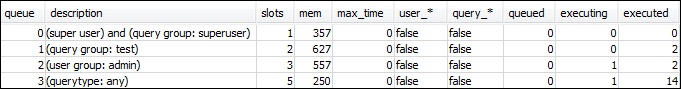

Le traduzioni sono generate tramite traduzione automatica. In caso di conflitto tra il contenuto di una traduzione e la versione originale in Inglese, quest'ultima prevarrà.
Sezione 4: utilizzo di wlm_query_slot_count per ignorare temporaneamente il livello di simultaneità in una coda
Può accadere che gli utenti abbiano l'esigenza temporanea di un numero maggiore di risorse per una query specifica. In questo caso possono utilizzare l'impostazione di configurazione wlm_query_slot_count per ignorare temporaneamente il modo in cui gli slot vengono allocati in una coda di query. Gli slot sono unità di memoria e CPU utilizzati per elaborare le query. È possibile ignorare il numero di slot nel caso di query occasionali che richiedono grandi quantità di risorse nel cluster, ad esempio quando si esegue un'operazione VACUUM nel database.
Potresti trovare che gli utenti spesso devono impostare wlm_query_slot_count per determinati tipi di query. In tal caso, regola la configurazione WLM e fornisci agli utenti una coda più adatta alle esigenze delle loro query. Per ulteriori informazioni su come ignorare temporaneamente il livello di simultaneità utilizzando il numero di slot, consultare wlm_query_slot_count.
Fase 1: come ignorare il livello di simultaneità utilizzando wlm_query_slot_count
Ai fini del presente tutorial, eseguiremo la stessa query SELECT di lunga durata. La query verrà eseguita come utente adminwlm utilizzando wlm_query_slot_count per aumentare il numero di slot disponibili per la query.
Per ignorare il livello di simultaneità utilizzando wlm_query_slot_count
-
Aumentare il limite per la query per essere sicuri di disporre di tempo sufficiente per eseguire la query sulla vista WLM_QUERY_STATE_VW e vedere il risultato.
set wlm_query_slot_count to 3; select avg(l.priceperticket*s.qtysold) from listing l, sales s where l.listid <40000; -
Esegui la query WLM_QUERY_STATE_VW con l'utente amministratore per vederne l'esecuzione.
select * from wlm_query_state_vw;Di seguito è riportato un risultato di esempio.

Il numero di slot per la query è 3. Ciò significa che la query utilizza tutti e tre gli slot per l'elaborazione, allocando tutte le risorse nella coda alla query.
-
Ora esegui la seguente query.
select * from WLM_QUEUE_STATE_VW;Di seguito è riportato un risultato di esempio.

L'impostazione di configurazione di wlm_query_slot_count ha validità solo per la sessione corrente. Se la sessione scade o un altro utente esegue una query, viene utilizzata la configurazione WLM.
-
Reimpostare il numero di slot ed eseguire nuovamente il test.
reset wlm_query_slot_count; select avg(l.priceperticket*s.qtysold) from listing l, sales s where l.listid <40000;Di seguito sono riportati i risultati di esempio.

Fase 2: esecuzione delle query da sessioni diverse
A questo punto eseguire le query da sessioni diverse.
Per eseguire le query da sessioni diverse
-
Nelle finestre RSQL 1 e 2 esegui la query seguente per utilizzare il gruppo di query di test.
set query_group to test; -
Nella finestra RSQL 1 esegui la seguente query di lunga durata.
select avg(l.priceperticket*s.qtysold) from listing l, sales s where l.listid <40000; -
Poiché la query di lunga durata è ancora in esecuzione nella finestra RSQL 1, esegui quanto segue. Questi comandi aumentano il numero di slot per utilizzare tutti gli slot per la coda, quindi avviano l'esecuzione della query di lunga durata.
set wlm_query_slot_count to 2; select avg(l.priceperticket*s.qtysold) from listing l, sales s where l.listid <40000; -
Apri una terza finestra RSQL ed esegui una query sulle viste per vedere i risultati.
select * from wlm_queue_state_vw; select * from wlm_query_state_vw;Di seguito sono riportati i risultati di esempio.


Nota che la prima query utilizza uno degli slot assegnati alla coda 1 per eseguire la query. Inoltre, tieni presente che una query è in attesa nella coda (dove
queuedè1estateèQueuedWaiting). Una volta completata la prima query, inizierà l'esecuzione della seconda. Ciò accade perché entrambe le query sono instradate al gruppo di queryteste la seconda deve attendere che siano disponibili slot sufficienti per iniziare l'elaborazione.